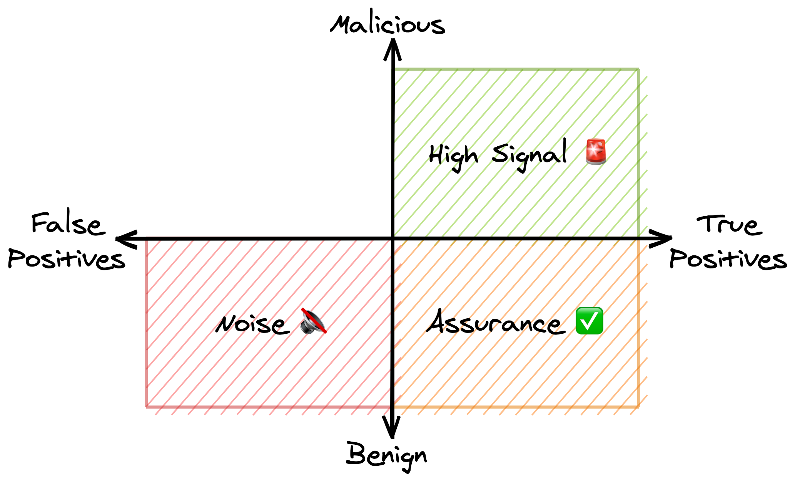

Nobody likes alerts that feel like a waste of time to review. But, how do you tell whether an alert is actually a waste of time?
The go-to metric to use is false-positive rate—if an alert has high a false-positive rate then it’s “noisy” and might be getting rid of. But, trying to distill the performance of an alert down to a single number is hard and false-positive rate might be a particularly bad choice.
While false-positive rate is a great metric to use while developing detection rules, it conflates too much to be useful for evaluating rule performance in production.
The problem with only measuring false-positive rate
Let’s look at two very different alerts that, based on their false-positive rate alone, would both be called “noisy”.
The unexpected SSH connection alert
Firstly, let’s look at a rule that alerts when someone SSH’s into a production server—the goal being to catch an attacker stealing or tampering with production data. Hopefully you don’t have attackers regularly accessing your servers, and so almost all the alerts are going to be for on-call engineers accessing production to fix an incident. These alerts get closed by the reviewer after checking that, yes, this really was the engineer responding to an incident.
But, what resolution should they pick when closing the alert?
There’s been no security impact so perhaps they should mark it as a false-positive? If so, this alert would have an almost 100% false-positive rate.
The phishing domain alert
Our second example is a detection rule that alerts on newly registered domain names which contain your company’s name. Depending on the company this could generate lots of alerts for domains which are closed as obviously harmless false-positives. A rule this simple is not going to be useful for Apple or Three or any other noun-named company. If that’s you, your stats will show that this alert also has a very high false-positive rate.
But something’s gone wrong here. While the phishing domain false positives are genuinely useless, the SSH alerts actually do provide some value (verifying that on-call engineers aren’t abusing their systems access). But, just looking at false-positive rate makes them look equally bad.
Measuring a second dimension: maliciousness
Is a detection rule’s goal to detect security incidents? Actually no, not really. That’s the goal of an entire suite of detections rules plus a team who review the alerts. An individual rule should have an extremely specific aim for what it detects, for example:
- Attackers likely want to steal data so alert on SSH access to our production servers.
- Phishing sites are usually hosted on lookalike domains so alert on newly registered domains which are similar to our company’s name.
- No legitimate users should be accessing a honeypot fileserver so alert on any interaction with it.
Whether an alert fired correctly (i.e. in line with the rule’s aim) is entirely separate from whether it detected malicious behaviour.
If your honeypot fileserver downloads a software update and an alert fires, that’s a false-positive: a self-update shouldn’t have been detected as a user interacting with the honeypot.
But, when an alert fires because a curious user stumbled across the honeypot, that’s a true-positive: while the behaviour may not have been malicious, the alert did fire correctly.
By separately measuring how often alerts are correct and how often they’re malicious, you get something like this 👇🏻

While this graph contains the traditional high signal alerts and noisy alerts, it also contains a third, new type of alert: the assurance alert.
Let’s quickly go over the different quadrants.
↗️ High signal rules 🚨
The top right quadrant should be obvious. Detection rules with high true-positive rate and high malicious rate are your gold standard, high signal alerts. They produce high signal alerts that you definitely shouldn’t be ignoring.
High signal alerts are going to include:
- The catastrophic stuff e.g. a binary is running whose hash matches known malware.
- The detection rules you’ve spent a long time tuning.
- The impossible stuff e.g. a honeypot gets triggered on your internal network.
↘️ Assurance rules ✅
Detection rules with a high true-positive rate and a high benign rate are “assurance” rules.
Think of all the “you’ve signed in on a new device” or “the email address on your account has been changed” emails you’ve received. While they’re always accurate (i.e. true-positives), they’re almost always benign because you’ve triggered them yourself. But, just because they’re rarely malicious doesn’t mean they’re bad.
The purpose of assurance rules isn’t to catch an attacker every time an alert fires, it’s to give you confidence that an attacker can’t do something without you knowing.
Assurance alerts are going to include things like:
- Someone has used a break-glass procedure only intended to be used during incidents. You want to verify it’s been used appropriately.
- Someone has been granted administrative permissions. You want to check they’re supposed to have these new, powerful permissions.
↙️ Noisy rules 🔇
Detection rules with a high false-positive rate and a high benign rate generate the classic “noisy” alert.
Noisy alerts just plain suck—they’re often not relevant to the rule’s aim and even when they are relevant, they’re mostly benign.
The phishing domain alert we looked at above is a good example of a noisy rule.
While it will catch bad domains like apple-devicelogin[.]com, it fails in a couple of common cases:
- Domains like
buyapples[.]comdo contain “Apple” but aren’t malicious. - Domains like
appleaderboard[.]comdon’t really contain “Apple” at all.
↖️ Dumb luck rules 🍀
The top left quadrant, with a high false-positive rate and miraculously high malicious rate, probably doesn’t contain any real rules.
If you have a detection rule that regularly misfires but, on investigation, you still find malicious behaviour then either:
- You need to stop reading this post and go evict the thousand different attackers you have in your system.
- You’re investigating alerts way too deeply. Go update LinkedIn with your new title “Threat Hunter” and collect a 50% pay rise.
Making assurance alerts less painful ✅
Assurance alerts are a sore spot. Although they provide some value, reviewing them feels very unproductive but it’s a tough decision to get rid of them.
These alerts exist because the consequences of a true-positive, malicious alert are very bad. Personally, would you be comfortable not being notified whenever your account was signed into on a new device?
Just the re-labelling from “noisy” to “assurance” can help make these alerts feel more productive, but identifying your assurance alerts also opens up opportunities to improve them.
Use sampling to reduce alert volume
Sampling is the simplest and most common way to tune assurance alerts. Airport security doesn’t screen every single traveller. The government doesn’t audit every single person’s taxes. Instead, they choose a sample of people to check.
There’s definitely a risk to sampling—there’s a chance you’ll miss some alerts for actual malicious things—but that’s a tradeoff you need to make. But, sampling is nice because the tradeoff you’re making is very clear—if you review 25% of the alerts, you’ve introduced a 75% chance of missing a real attacker.
In many cases sampling is worth the risk. If you’ve got other detection rules that can catch the compromise even if you missed the initial assurance alert, sampling is probably a good choice. Likewise, if an attacker is going to trigger multiple assurance alerts then sampling is an excellent choice. Even if you only review 25% of alerts, if an attacker is going to generate 10 of them, you’ve still got excellent chances of catching them.
Use Multi-Factor Auth to shift the burden
A lot of the pain from assurance alerts is because the people reviewing the alerts don’t have the same context as the people causing the alerts.
When reviewing an alert for SSH access to a production server, the reviewer has to go work out: what incident might this be related to and does that incident actually require accessing production? While these answers are obvious to the on-call engineer who triggered the alert, they’re not so easy to answer by the alert reviewer.
What’d be nice is if the person generating the alert could be the one to review it. They’ve got all the context and so can easily affirm, yes I did just do X. Obviously, this needs to be done carefully though—it’s no use if an attacker can SSH into production and then just close the alert themself.
That’s where multi-factor authentication can help. If the on-call engineer has an authentication factor that’s entirely separate from their SSH access, then perhaps they could use that to assert the SSH access is legitimate. While this won’t catch someone abusing their systems access, it will catch an attacker abusing some stolen credentials.
Using this model in practice
If you’re only tracking whether an alert catches an attacker, it’s easy for assurance alerts to get lost among the noisy alerts. And that’s a shame because assurance alerts actually have quite a few simple opportunities for improvement.
Unfortunately, it’s not really feasible to completely pivot the meaning of true-positive from “this caught an attacker” to “this alert fired correctly”.
Instead, I’d suggest using a three-category system:
- False-positive: the alert fired incorrectly i.e. this event isn’t what the rule was aiming to detect (and by assumption, the alert didn’t catch anything malicious).
- Benign: the alert fired correctly but didn’t turn out to be anything malicious.
- True-positive: the alert caught something malicious (and by assumption, the alert fired correctly).
While this blurs some of the lines between the quadrants it’s good enough to be useful. As always in security, a usable solution trumps a perfect one.